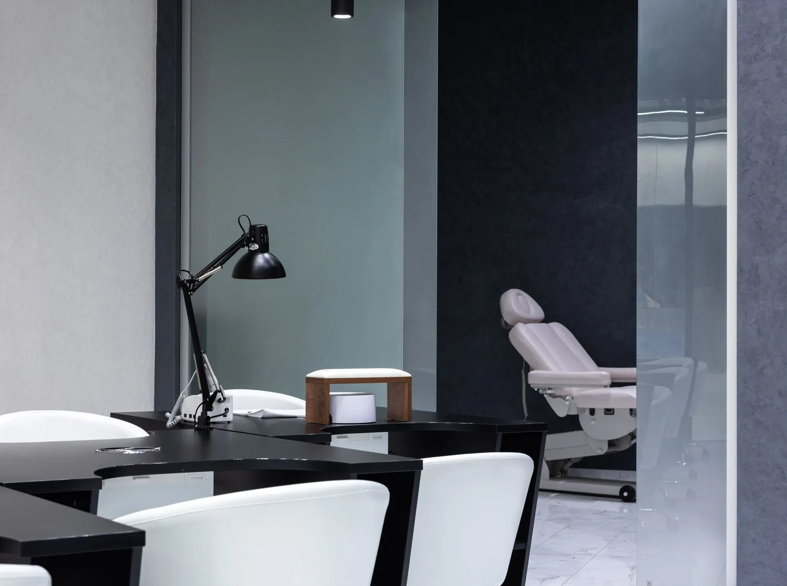
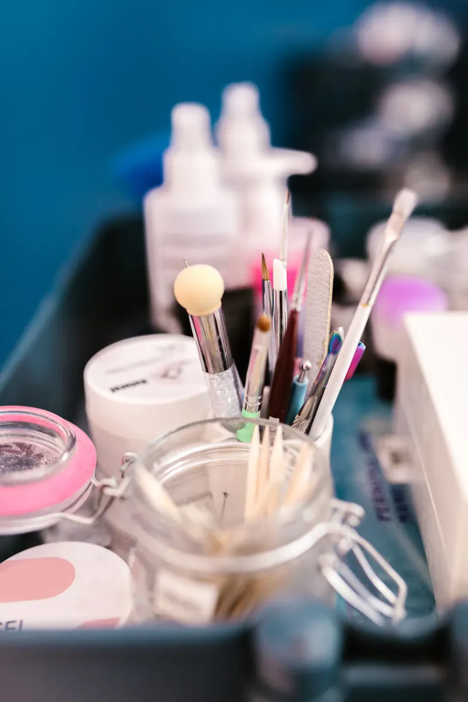
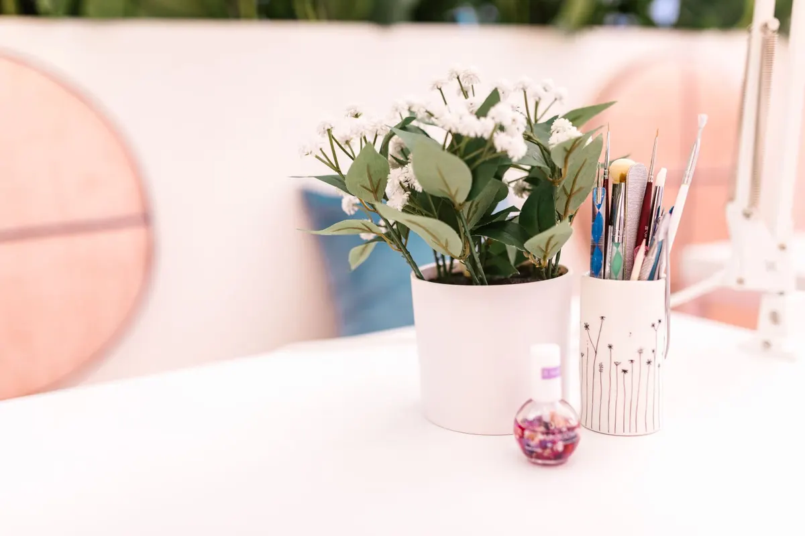
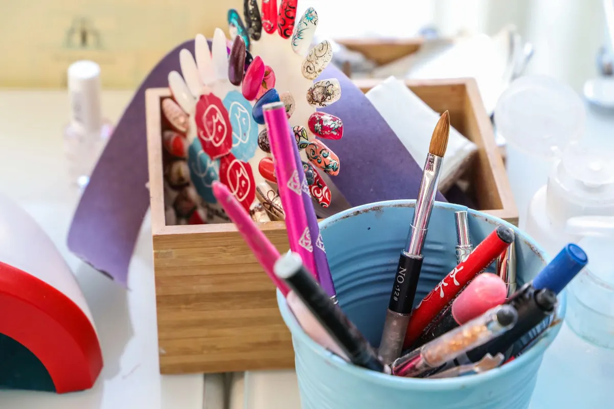

Ногтевая студия · Ижевск
Маникюр и педикюр в Ижевске – запись к мастеру Полине
Маникюр, педикюр, наращивание, дизайн и мужской сервис. Студия открыта каждый день с 9:00 до 22:00, запись предварительная.
- Ежедневно 9:00–22:00
- 4,4 на Яндекс.Картах
- Предварительная запись

Услуги
Перечень услуг с карточки студии. Цен на карточке нет: стоимость называет мастер при записи.
Маникюр
- Классический женский маникюр с покрытиемуточнить
- Аппаратный и комбинированный маникюруточнить
- SPA-маникюрПарафинотерапияуточнить
- Детский и мужской маникюруточнить
Педикюр
- Женский педикюрАппаратный, комбинированный, SMARTуточнить
- Мужской педикюруточнить
Наращивание и дизайн
- Наращивание ногтейуточнить
- Дизайн ногтей, артдизайнуточнить
Есть подарочный сертификат. Оплата наличными, банковским переводом и по СБП.
Как записаться
- 01
Выбираете услугу
Маникюр, педикюр, наращивание или дизайн.
- 02
Пишете во ВКонтакте или звоните
Запись предварительная, студия работает ежедневно с 9:00 до 22:00.
- 03
Согласуете время
Мастер называет стоимость и свободное окно.
- 04
Приходите на Пушкинскую, 227
Есть парковка и Wi-Fi.



Что важно знать
Один мастер, который ведёт вас
Клиентки пишут, что ходят к Полине по 4 года и записываются к ней заранее.
Уютно и чисто
В отзывах: студия сделана со вкусом, предложат чай и кофе, включат любимую музыку.
Для всей семьи
Женский, мужской и детский маникюр, женский и мужской педикюр.
Удобная оплата
Наличными, банковским переводом и по СБП. Есть подарочный сертификат.
Отзывы с Яндекс.Карт
«Хожу только к Полине уже 4 года. Она не только превосходный мастер, она еще и человек замечательный. Маникюр без единого замечания. Студия очень уютная, чистая. И чай и кофе предложат, и музыку любимую включат и телевизор тебе пожалуйста, все супер!»
Анастасия Азиева · 8 октября 2024
«Это мастер, которого я искала 2 года. Очень аккуратно делает все: создаёт форму, архитектуру, покрытие. И в итоге получается вау-результат. При чем за короткий срок. Сама студия сделана со вкусом и любовью к делу. Поэтому всегда хочется возвращаться за новой красотой.»
Марина Каракулина · 26 января 2025
«Этот мастер – мечта любой девушки! Её аккуратность и прайс – это лучшее комбо в моей жизни. Посоветовала подруга, не пожалела ни разу. Записываться нужно сразу, потому что мастер хороший!»
Алина Максимова · 14 сентября 2025
Отзывы с карточки на Яндекс.Картах.
Запись на ближайшие дни
- Адрес
- Пушкинская ул., 227, Ижевск
- Часы
- Ежедневно 09:00–22:00
- Телефон
- +7 (950) 177-94-35